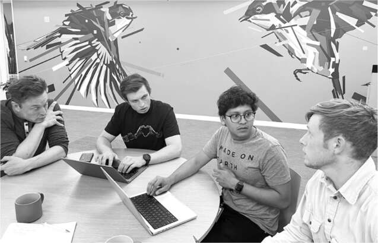
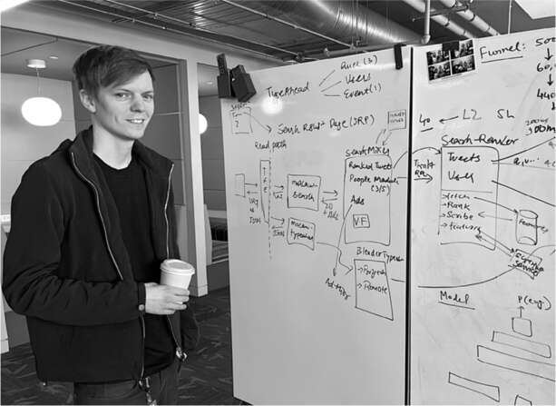
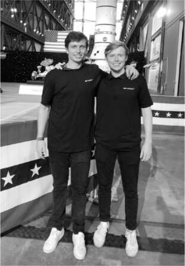

James, Andrew và Ross
Tập hợp đội ngũ kỹ thuật trẻ trong các phòng họp ở tầng hai vào thứ Năm đó là một chàng trai hai mươi chín tuổi trông giống Musk một cách kỳ lạ. James Musk, con trai của em trai Errol, có mái tóc, nụ cười tươi, cử chỉ tay đặt lên cổ và giọng Nam Phi giống hệt người anh họ đầu tiên của mình. Có một sự sắc sảo trong tâm trí và ánh mắt của anh, nhưng nó được làm dịu đi bởi nụ cười rộng, sự nhạy bén về cảm xúc và sự háo hức làm hài lòng người khác mà Elon không có. Là một kỹ sư phần mềm chăm chỉ trong nhóm Autopilot tại Tesla, James đã trở thành hạt nhân của một nhóm nhỏ những người trung thành điều phối ba chục kỹ sư Tesla và SpaceX đổ bộ xuống trụ sở Twitter như một lực lượng viễn chinh trong tuần đó.
Từ năm 12 tuổi, James đã say mê theo dõi những chuyến phiêu lưu của Elon và thường xuyên viết thư cho anh họ. Giống như Elon, anh rời Nam Phi một mình khi vừa tròn 18 tuổi và dành một năm rong ruổi khắp Riviera, làm việc trên du thuyền và ở trong những nhà trọ thanh niên. Sau đó, anh đến Berkeley và gia nhập Tesla đúng lúc Elon cần người cho dự án nhà máy pin Nevada năm 2017. Anh sau đó trở thành một phần của nhóm Autopilot, phát triển hệ thống lái tự động phân tích dữ liệu video từ người lái để xe tự hành có thể học hỏi cách vận hành.
Cuối tháng 10, khi Elon gọi và "yêu cầu" anh đến giúp đỡ thương vụ Twitter sắp tới, James đã hơi do dự. Sinh nhật bạn gái anh vào đúng cuối tuần đó, và họ đã lên kế hoạch tham dự đám cưới của bạn thân cô ấy. Nhưng cô ấy hiểu rằng anh cần giúp đỡ anh họ mình. "Anh phải đi thôi," cô nói với anh.
Cùng tham gia nhiệm vụ này là Andrew, em trai tóc đỏ, nhút nhát hơn của James, một kỹ sư phần mềm tại Neuralink. Khi còn nhỏ ở Nam Phi, cả hai đều là vận động viên cricket cấp quốc gia cũng như là những sinh viên kỹ thuật xuất sắc. Trẻ hơn Elon và Kimbal nửa thế hệ, họ không thuộc nhóm bạn thời niên thiếu bao gồm anh em nhà Rive, anh em họ bên ngoại của Elon. Elon đã hỗ trợ Andrew và James khi họ rời Nam Phi, chi trả học phí đại học và sinh hoạt phí. Andrew học tại UCLA, nơi anh nghiên cứu công nghệ blockchain với Len Kleinrock, người tiên phong trong lý thuyết chuyển mạch gói internet. Như một đặc điểm di truyền của gia đình (mà có thể đúng là như vậy), James và Andrew nghiện trò chơi chiến lược Polytopia. "Bạn gái cũ của tôi ghét tôi vì điều đó," Andrew nói. "Có lẽ đó là lý do tại sao cô ấy là bạn gái cũ của tôi."
Khi ở Riviera, James đang ở trong một nhà trọ thanh niên tại Genoa thì một chàng trai khác thấy anh đang dùng hai ngón tay múc bơ đậu phộng từ lọ. "Này anh bạn, kinh quá," cậu ta vừa cười vừa nói. Đó là cách James gặp Ross Nordeen, một chuyên gia máy tính gầy gò, tóc xõa đến từ Wisconsin. Sau khi tốt nghiệp Đại học Công nghệ Michigan, Ross trở thành một lập trình viên tự do, làm việc từ xa và thỏa mãn niềm đam mê du lịch của mình. "Tôi thường gặp gỡ mọi người và hỏi, 'Tôi nên đi đâu tiếp theo?', đó là cách tôi đến Genoa."
Một sự tình cờ thường xảy ra với những người thích đi du lịch, đặc biệt là ở những nơi xa lạ, Ross nói rằng anh đang ứng tuyển vào SpaceX. "Ồ, đó là công ty của anh họ tôi," James trả lời. Ross đã hết tiền, vì vậy James mời anh ở lại một ngôi nhà mà anh và một người bạn đã thuê gần Antibes. Ross ngủ trên một tấm nệm ngoài trời.
Một buổi tối, họ đến một câu lạc bộ đêm ở ngôi làng thời thượng Juan-les-Pins. James đang trò chuyện với một cô gái thì một người đàn ông đến và nói cô ấy là bạn gái của anh ta. Họ ra ngoài, một cuộc ẩu đả xảy ra, và James, Ross cùng người bạn của họ bỏ chạy. Nhưng họ đã để áo khoác lại, vì vậy Ross được giao nhiệm vụ quay lại lấy. "Họ cử tôi quay lại vì tôi là người nhỏ con và trông hiền lành nhất," anh nói. Trên đường về nhà, họ bị phục kích, bị đe dọa bằng chai vỡ và bị đuổi theo cho đến khi họ nhảy qua hàng rào và trốn trong bụi rậm.
Chuyện này và những cuộc phiêu lưu khác đã gắn kết Ross và James. Tại một hội nghị một năm sau đó, Ross gặp một giám đốc điều hành, người đã cho anh một công việc tại Palantir, công ty phân tích dữ liệu và tình báo khá bí mật do Peter Thiel đồng sáng lập, và Ross đã giúp James có được một kỳ thực tập ở đó. Cuối cùng, Ross đã làm việc trong nhóm Autopilot tại Tesla cùng với James.
James, Andrew và Ross trở thành bộ ba trụ cột trong thương vụ thâu tóm Twitter của Musk, hạt nhân của một đội ngũ gồm ba mươi sáu kỹ sư từ Tesla và SpaceX, những người đã tập trung tại phòng họp tầng hai của công ty trong tuần đó để thực hiện chuyển đổi. Nhiệm vụ đầu tiên của bộ ba này, vừa táo bạo vừa có phần khó xử vì họ đều còn khá trẻ, là thành lập một đơn vị phân tích để đánh giá kỹ năng viết mã, năng suất, và thậm chí cả thái độ của hơn hai nghìn kỹ sư Twitter, từ đó quyết định ai sẽ được giữ lại.
James và Andrew ngồi với máy tính xách tay tại một chiếc bàn tròn nhỏ trong không gian mở gần phòng họp tầng hai mà Musk đã trưng dụng làm đại bản doanh. X đang chơi gần đó với bốn khối Rubik lớn. (Không, cậu bé vẫn chưa thể giải được. Cậu mới chỉ hai tuổi rưỡi.) Hôm đó là thứ Năm, ngày 27 tháng 10, ngày Musk đang gấp rút hoàn tất thương vụ thâu tóm bất ngờ, nhưng ông vẫn dành ra một tiếng để bàn bạc với các cộng sự về việc tinh giản đội ngũ kỹ sư Twitter. Tham gia cùng họ còn có một kỹ sư trẻ khác từ đội Autopilot, Dhaval Shroff, một trong những người thuyết trình tại AI Day 2.
James, Andrew và Dhaval có quyền truy cập vào toàn bộ kho mã nguồn đã được viết tại Twitter trong năm qua. "Hãy tìm xem ai đã viết được một trăm dòng mã trở lên trong tháng trước," Musk nói với họ. "Tôi muốn các bạn xem qua thư mục và kiểm tra ai đang thực sự đóng góp mã."
Kế hoạch của ông là sa thải hầu hết các kỹ sư, chỉ giữ lại những người thực sự giỏi. "Hãy xác định ai đã viết một lượng mã đáng kể, sau đó trong nhóm đó, ai là người viết mã tốt nhất," ông nói. Đó là một nhiệm vụ khổng lồ, càng khó khăn hơn vì họ không có mã nguồn ở định dạng dễ dàng xác định ai đã thêm hoặc xóa từng phần.
James nảy ra một ý tưởng. Anh và Dhaval đã gặp một kỹ sư phần mềm trẻ của Twitter tại một hội nghị ở San Francisco vài ngày trước. Tên anh ấy là Ben. James gọi cho Ben, bật loa ngoài và bắt đầu hỏi dồn dập.
"Tôi có danh sách tất cả các lần thêm và xóa của mọi người," Ben nói.
"Bạn có thể gửi nó không?" James hỏi. Họ dành thời gian tìm hiểu cách sử dụng tập lệnh Python và các kỹ thuật cắt tỉa để truyền tải nhanh hơn.
Sau đó, Musk xen vào. "Cảm ơn vì đã giúp đỡ nhé," ông nói.
Có một khoảng lặng dài. "Elon?" Ben hỏi. Anh ấy có vẻ hơi kinh ngạc khi vị sếp tương lai của mình đang dành thời gian xem xét mã nguồn vào đúng ngày họ đang gấp rút hoàn tất thương vụ.
Nghe giọng Pháp của anh ấy, tôi nhận ra anh ấy chính là Ben - Ben San Souci - người đã hỏi Musk về việc kiểm duyệt nội dung tại quán cà phê. Với phong thái của một kỹ sư, anh ấy không phải là người giỏi giao tiếp, nhưng đột nhiên anh ấy đã được đưa vào nhóm thân cận. Đó là minh chứng cho giá trị của sự tình cờ - và của việc xuất hiện trực tiếp.
Sáng hôm sau, khi Twitter chính thức thuộc về Musk, bộ ba trụ cột đã đến tầng chín, nơi quán cà phê đang phục vụ bữa sáng miễn phí. Ben cũng ở đó và cùng với một vài kỹ sư Tesla khác, họ ra ngoài sân hiên đầy nắng nhìn ra Tòa thị chính. Có hàng chục chiếc bàn được bao quanh bởi đồ nội thất vui nhộn, nhưng không có ai khác từ Twitter ở đó.
Khi James, Andrew và Ross trình bày về tiến độ danh sách nhân viên bị sa thải, Ben không ngần ngại bày tỏ quan điểm. Anh nói: “Theo kinh nghiệm của tôi, năng lực cá nhân quan trọng, nhưng hiệu quả làm việc nhóm cũng quan trọng không kém. Thay vì chỉ chọn ra những lập trình viên giỏi, tôi nghĩ nên tìm những nhóm làm việc ăn ý với nhau.”
Dhaval đồng tình: “Tôi, James và mọi người trong nhóm Autopilot luôn ngồi làm việc cùng nhau, ý tưởng được chia sẻ rất nhanh chóng, và kết quả làm việc nhóm tốt hơn hẳn so với bất kỳ cá nhân nào trong chúng tôi.” Andrew nhận xét rằng đó là lý do Musk thích làm việc trực tiếp hơn là làm việc từ xa.
Một lần nữa, Ben sẵn sàng phản biện: “Tôi ủng hộ việc đến văn phòng làm việc, và tôi vẫn đang làm vậy. Nhưng tôi là một lập trình viên và không thể làm việc hiệu quả nếu bị gián đoạn mỗi giờ. Vì vậy, đôi khi tôi không đến. Có lẽ mô hình lai là tốt nhất.”
Phụ trách
Trong nội bộ Twitter, cũng như tại Tesla, SpaceX và cả trên Phố Wall, mọi người bàn tán xem liệu Musk có chọn ai đó để giúp ông điều hành công ty hay không. Ngày đầu tiên làm chủ Twitter, ông đã bí mật gặp gỡ một ứng cử viên tiềm năng, Kayvon Beykpour, đồng sáng lập ứng dụng phát trực tiếp video Periscope, ứng dụng đã được Twitter mua lại và sau đó khai tử. Beykpour từng là giám đốc phát triển sản phẩm tại Twitter nhưng đã bị Agrawal sa thải vào đầu năm 2022 mà không có lý do.
Cuộc trò chuyện của họ trong phòng họp của Musk, cùng với nhà đầu tư công nghệ Scott Belsky, cho thấy sự đồng điệu trong tư duy. Beykpour đề xuất: “Tôi có một ý tưởng về quảng cáo. Hãy hỏi những người đăng ký xem họ quan tâm đến điều gì và đề nghị cá nhân hóa trải nghiệm của họ. Ông có thể biến nó thành một lợi ích của việc đăng ký.”
Musk đáp: “Đúng vậy, và các nhà quảng cáo sẽ rất thích điều đó.”
Beykpour tiếp tục: “Cũng nên có nút phản đối cho các tweet. Cần có tín hiệu tiêu cực từ người dùng để đưa vào xếp hạng.”
Musk nói: “Chỉ những người dùng trả phí và đã xác minh mới được phép phản đối, vì nếu không, hệ thống có thể bị tấn công bởi bot.”
Kết thúc cuộc trò chuyện, Musk ngỏ lời mời Beykpour một cách thân mật: “Sao anh không quay lại làm việc ở đây? Có vẻ như anh rất yêu thích công ty này.” Sau đó, ông trình bày toàn bộ tầm nhìn của mình về việc biến Twitter thành một nền tảng tài chính và nội dung, với tất cả các yếu tố mà ông đã hình dung cho X.com.
Beykpour trả lời: “Tôi đang phân vân. Tôi rất ngưỡng mộ ông. Tôi đã mua mọi sản phẩm mà ông từng tạo ra. Hãy để tôi suy nghĩ lại.”
Tuy nhiên, rõ ràng là Musk sẽ không nhường nhiều quyền kiểm soát, giống như ông đã làm ở các công ty khác của mình. Một tháng sau, tôi hỏi Beykpour kết luận của anh ấy là gì. Anh ấy nói: “Tôi không thấy có vai trò nào phù hợp với mình. Elon rất đam mê việc trực tiếp chỉ đạo kỹ thuật và sản phẩm.”
Musk không vội vàng tìm người khác điều hành Twitter ngay lập tức, ngay cả sau khi ông thực hiện một cuộc thăm dò trực tuyến cho thấy ông nên làm như vậy. Ông thậm chí còn bỏ qua việc bổ nhiệm một giám đốc tài chính. Ông muốn biến nó thành sân chơi của riêng mình. Tại SpaceX, ông có ít nhất mười lăm người báo cáo trực tiếp, và tại Tesla, con số này là khoảng hai mươi. Tại Twitter, ông nói với nhóm của mình rằng ông sẵn sàng có hơn hai mươi người. Và ông ra lệnh rằng họ và những kỹ sư tận tụy nhất nên làm việc trong một không gian mở khổng lồ trên tầng mười, nơi ông sẽ trực tiếp làm việc với họ mỗi ngày và đêm.
Vòng Một
Musk đã giao cho nhóm cộng sự trẻ của mình nhiệm vụ lập chiến lược cắt giảm mạnh mẽ đội ngũ kỹ sư đang phình to, và họ đã rà soát lại toàn bộ mã nguồn để đánh giá ai thực sự xuất sắc và tận tâm. Vào 6 giờ chiều thứ Sáu, ngày 28 tháng 10, hai mươi tư giờ sau khi hoàn tất thương vụ, Musk đã tập hợp họ cùng ba mươi sáu cộng sự tin cậy khác từ Tesla và SpaceX để bắt đầu triển khai kế hoạch.
“Twitter hiện có hai nghìn năm trăm kỹ sư phần mềm,” Musk nói với họ. “Nếu mỗi người chỉ viết ba dòng mã mỗi ngày, một mức độ thấp đến nực cười, thì mỗi năm cũng phải được ba triệu dòng, đủ để viết cả một hệ điều hành. Điều này lại không xảy ra. Có gì đó rất sai sót ở đây. Tôi cảm thấy như mình đang ở trong một vở hài kịch vậy.”
“Những người quản lý sản phẩm chẳng biết gì về lập trình cứ liên tục yêu cầu các tính năng mà họ không biết cách tạo ra,” James nói. “Giống như những vị tướng kỵ binh không biết cưỡi ngựa.” Đó là câu nói mà chính Musk thường dùng.
“Tôi sẽ đặt ra một quy tắc,” Musk tuyên bố. “Chúng ta có một trăm năm mươi kỹ sư làm Autopilot. Tôi muốn giảm số lượng kỹ sư ở Twitter xuống con số đó.”
Ngay cả khi đồng ý với quan điểm của Musk về năng suất thấp tại Twitter, việc sa thải hơn 90% kỹ sư vẫn khiến hầu hết những người có mặt phải chùn bước. Milan Kovac, giờ đã bớt e ngại Musk hơn so với những ngày đầu của Optimus, giải thích tại sao cần nhiều kỹ sư hơn. Luật sư Alex Spiro cũng khuyên nên thận trọng. Ông cho rằng một số công việc tại Twitter không đòi hỏi kỹ năng máy tính thiên tài. “Tôi không hiểu tại sao mỗi người làm việc tại một công ty truyền thông xã hội đều phải có IQ một trăm sáu mươi và làm việc hai mươi giờ một ngày,” ông lập luận. Một số người cần giỏi bán hàng, những người khác cần kỹ năng cảm xúc của người quản lý giỏi, và một số chỉ đơn giản là tải lên video của người dùng và không cần phải là siêu sao. Thêm vào đó, việc cắt giảm nhân sự quá mức có nguy cơ khiến hệ thống sụp đổ nếu ai đó bị ốm hoặc chán nản.
Musk không đồng ý. Ông muốn cắt giảm mạnh không chỉ vì lý do tài chính mà còn vì ông muốn một văn hóa làm việc nhiệt huyết, tận tụy. Ông sẵn sàng, thậm chí háo hức chấp nhận rủi ro và hoạt động mà không có mạng lưới an toàn.
James, Andrew, Ross và Dhaval bắt đầu gặp gỡ các quản lý của Twitter và yêu cầu họ đáp ứng mục tiêu của Musk là loại bỏ tới 90% nhân viên. “Họ khá buồn,” Dhaval nói. “Họ cho rằng công ty sẽ sụp đổ.” Anh và những cộng sự khác đều có một câu trả lời chuẩn: “Elon đã yêu cầu điều này, và đây là cách ông ấy vận hành, vì vậy chúng ta phải đưa ra một kế hoạch.”
Vào tối Chủ nhật, ngày 30 tháng 10, James đã gửi cho Musk danh sách chính thức mà anh và các cộng sự khác đã lập ra về những kỹ sư giỏi nhất nên được giữ lại. Những người khác có thể bị cho thôi việc. Musk đã sẵn sàng hành động ngay lập tức. Nếu việc sa thải được thực hiện trước ngày 1 tháng 11, công ty sẽ không phải trả tiền thưởng và quyền chọn cổ phiếu đến hạn vào thời điểm đó. Nhưng các quản lý nhân sự của Twitter đã phản đối. Họ muốn xem xét lại danh sách để đảm bảo tính đa dạng. Musk bác bỏ đề xuất đó. Tuy nhiên, ông đã phải tạm dừng trước một cảnh báo khác của họ. Việc sa thải, nếu được thực hiện một cách vội vàng, sẽ dẫn đến tiền phạt vì vi phạm hợp đồng và vi phạm luật lao động của California. Điều đó sẽ tốn thêm hàng triệu đô la so với việc chờ đợi đến sau khi đã trả tiền thưởng theo hợp đồng.
Musk miễn cưỡng đồng ý trì hoãn việc sa thải hàng loạt cho đến ngày 3 tháng 11. Thông báo được gửi qua email không ký tên vào tối hôm đó: “Để đưa Twitter vào guồng quay lành mạnh, chúng tôi sẽ phải trải qua quá trình khó khăn là giảm bớt lực lượng lao động toàn cầu.” Khoảng một nửa số nhân viên của công ty trên toàn thế giới, và gần 90% của một số đội ngũ cơ sở hạ tầng, đã bị cho thôi việc, quyền truy cập máy tính và email công ty của họ bị cắt ngay lập tức. Ông cũng sa thải hầu hết các quản lý nhân sự.
Và đó mới chỉ là vòng một trong cuộc thanh trừng ba vòng.

Với James Musk, Dhaval Shroff và Andrew Musk đánh giá mã

Ross Nordeen nghiên cứu kiến trúc phần mềm của Twitter

James và Andrew Musk